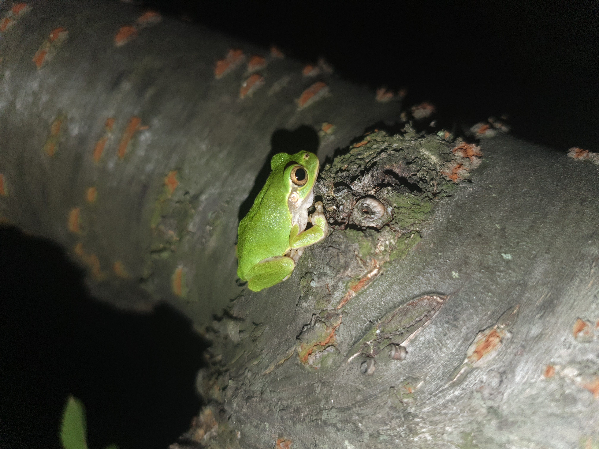
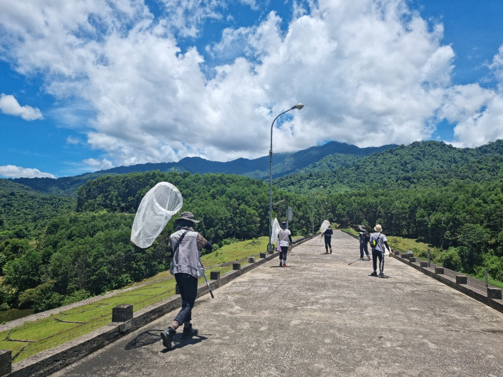
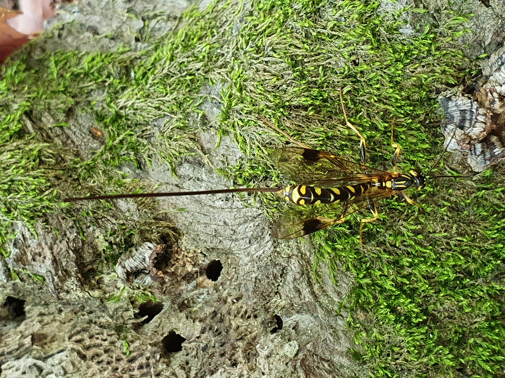
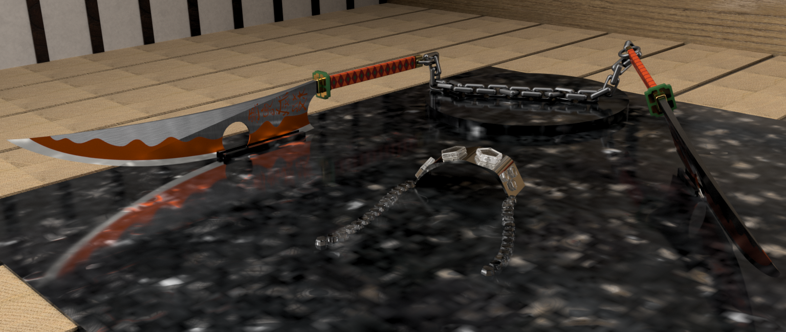

포스터터발표 초록입니다.
10년 가까이 동물상 연구가 진행되지 않았던 남한의 남쪽에 위치한
작은 섬인 여서도에 대한 나비목 목록을 보고한 내용입니다.
추가적으로, 미기록종 한 종을 발굴할 수 있었습니다.
발표를 진행한 양재관 학생에게 감사드립니다.
This section reports a Lepidoptera species list from Yeoseo Island,
a small isalnd located in the southern part of South Korea,
where faunistic research had not been conducted for nearly a decade.
Additionally, one previously unrecorded species was discovered.
Special thanks to student Jae-Gwan Yang for presenting this work.
Introduction

안녕하세요, 정인원입니다. 반갑습니다!
홈페이지를 방문해 주셔서 감사드립니다.
학부에선 자연 과학을 전공하고 식물 대사체 분석을 주제로 교내에서
포스터 발표 진행 후 졸업했습니다.
석사 기간 동안 한반도의 감꼭지나방과의 계통학적 연구를 수행했고
기존에 전통적으로 아뤄지는 형태학, 분자와 접목해
인공지능, Micro-CT, 시뮬레이션 등 다양한 방법들을 통해
해당 과에 속하는 종들의 다양성을 다각도에서 분석했습니다.
Hello, I'm In-Won Jeong. Nice to meet you!
Thank you for visiting my website.
I majored in Natural Sciences during my undergraduate studies
and graduated after presenting a campus poster on
plant metabolite analysis.
During my master's degree,
I conducted a phylogenetic study on the family Stathmopodidae from the Korean Peninsula.
By integrating traditional morphological and molecular approaches with
artificial intelligence, Micro-CT imaging, and simulation techniques,
I explored the diversity of species within this family from multiple perspectives.
Education
Ajou University
(Major: Biological Science; Minor: Chemistry & Biological Engineering),
Suwon, Republic of Korea
2017. March.~2023. February.
Army, Gangwon-do, Republic of Korea
2018. April.~2019. December.
Jeonbuk National University
(Department of Agricultural Convergence Technology),
Jeonju, Republic of Korea
2023. March.~2025. August.
Publication
Paper
-
Five New and Three Newly Recorded Moths (Lepidoptera: Autostichiidae, Blastobasidae, Oecophoridae, Stathmopodidae, Nolidae, and Noctuidae) from Korea
This study reports for the first time an unrecorded species of the genus Stathmopoda from the Korean Peninsula. (Entomological Research Bulletin, 2024.10.)
-
A new species of Pachyrhabda Meyrick (Lepidoptera: Stathmopodidae) from the Korean Peninsula

This study reports for the first time a new species belonging to a previously unrecorded genus of Stathmopodidae from the Korean Peninsula. Jeong, I. W., & Kim, S. (2024). A new species of Pachyrhabda Meyrick (Lepidoptera: Stathmopodidae) from the Korean Peninsula. Zootaxa, 5507(1), 179-186.
-
Insight on kleptoparasitic bee, Melecta chinensis (hymenoptera: Apidae), in the Republic of Korea Morphology, biology and molecular characteristics
This study comprehensively addresses the morphological, ecological, and molecular aspects of kleptoparasitic bees. Kim, S., Lim, K., Park, D. Y., Park, J., Jeong, I. W., & Lee, S. (2024). Insight on kleptoparasitic bee, Melecta chinensis (hymenoptera: Apidae), in the Republic of Korea: Morphology, biology and molecular characteristics. Entomological Research, 54(4), e12723.
Conference
Korean Society of Applied Entomology, 2025, Spring
포스터터발표 초록입니다.
Stathmopoda 속의 종들을 인공지능 알고리즘인 YOLO를 활용해
자동적으로 탐지하고 동정하는 내용입니다.
기존의 인공지능 종 동정은 다른 과 혹은 목을 섞은 뒤 동정 성능을 평가했는데
해당 연구에서는 같은 속의 종들의 앞날개 중심으로 인공지능이 미세한 차이를 인식하고
종을 정확히 구분할 수 있는지 확인하고자 했습니다.
This is an abstract for an poster presentation.
This study presents the automatic detection and identification of species
within the genus Stathmopoda using the Artificial Intelligence algorithm YOLO.
While previous AI-based species identification studies have typically assessed performance
using mixed samples from differenct families or orders, this research focused
specifically on subtle morphological differences within forewings of species
belonging the the same genus, aiming to verify whether AI could accurately recognize
and differentiate closely related species.
논문 작성 중인 내용이며, 학습 결과는 추후 QR 코드를 통해 제공해 누구나 쉽게 해당 결과를 활용할 수 있게 했습니다.
This manuscript is currently in preparations, and the detailed training results will later be made accessible
via a QR code, enabling easy utilization and application of the findings by anyone interested.
Korean Society of Applied Entomology, 2025, Spring
포스터터발표 초록입니다.
Micro-CT로 신종을 보고하는 내용입니다.
Micro-CT는 많이 다룬 내용이라 설명은 생략하겠습니다.
This section reports new species identified using Micro-CT.
Since Micro-CT has been extensively covered previously, its explanation will be omitted.
Korean Society of Applied Entomology, 2025, Spring
포스터발표 초록입니다.
연구가 극히 제한된 감꼭지나방과의 Atkinsonia 속에 속하는
종들 중에서 형태적으로 유사하지만 육식과 초식의 생태적 특징을 가진 두 종을
FE-SEM, 유체역학 분석을 통해 마이크로구조부터 기능적 차이까지 분석했습니다.
This is an abstract for an poster presentation.
Among species of the genus Atkinsonia within the family Stathmopodidae,
a group for which research is extremely limited,
we analyzed two morphologically similar species exhibiting carnivorous and herbivorous
ecological traits, respectively.
Using FE-SEM and fluid dynamics analyses, we examined their
microstructures and assessed their functinal differences.
유체역학 분석을 위해 사용된 프로그램들입니다.
These are the programs used for fluid dynamics analysis.
유체역학 시뮬레이션 과정입니다.
This is the fluid dynamics simulation process.
Korean Society of Applied Entomology, 2025, Spring
포스터터발표 초록입니다.
일반적으로 동물들에게서 COI 유전자가 종 구분에서 가장 많이 사용되었습니다.
하지만 해당 연구는 COI보다 EF1a 유전자가 Stathmopoda속에서 더 종의 특징을
잘 반영한다는 결과를 바탕으로 선행 연구에서 사용된 COI과 EF1a의 특정 유전자 영역과 더불어
RNA 유전자와 EF1a의 다른 유전자 영역을 함께 평가함으로써 종 구분에 대한 유전자들의
성능을 더 면밀히 평가하고자 했습니다.
Generally, the COI gene has been the most commonly used genetic marker for
species delimitation in animals.
However, based on findings indicating that the EF1a gene better reflects species characteristics
within the genus Stathmopoda, this study aimed to more thoroughly evaluate
the performance of genetic markers for species delimitation.
Alongside specific COI and EF1a gene regions used in previous research,
this study additionally assessed an RNA gene and different region of EF1a to determine
their effectiveness in distinguishing species.
Korean Society of Applied Entomology, 2025, Spring
구두발표 초록입니다.
한반도산 감꼭지나방과를 형태적 다양성, 분자적 댜양성, 활용적 다양성에 초점을 두고 분석한 내용입니다.
학위를 마무리하면서 다룬 내용이라 양이 많아서 추후에 Review 항목에서 따로 다루도록 하겠습니다.
This study analyzed the family Stathmopodidae from the Korean Peninsula, focusing on morphological, molecular, and applied diversity.
As this work was conducted extensively in the process of completing my degree,
it will be discussed separately in the Review section later due to its considerable volume.
Korean Society of Applied Entomology, 2024, Fall
포스터터발표 초록입니다.
이전 발표와 마찬가지로 Micro-CT를 활용한 종 동정 포스터입니다.
저번 발표에서 중형종에 Micro-CT가 적합한 것을 발견했고,
Casmara 속의 신종들을 비파괴로 동정한 후 보고한 내용입니다.
This is an abstract for an poster presentation.
This poster, similar to the previous presentation, address species identification using Micro-CT.
Following our earlier finding that Micro-CT is suitable for medium-sized species,
we non-destructively identified and reported new species of the genus Casmara.
Casmara agronoma의 생식기를 디지털 환경에서 손상없이 절단하고 aedeagus를 분리했습니다.
더 많은 Micro-CT 결과들은 Contact->유튜브 ID를 유튜브에서 검색하시면 보실 수 있습니다.
We digitally dissected the genitalia of Casmara agronoma without damage and successfully isolated the aedeagus.
Additional Micro-CT results can be viewed on Youtube by searching the Youtube ID provided in the Contact section.
Korean Society of Applied Entomology, 2024, Spring
포스터터발표 초록입니다.
곤충의 동정을 위해선 생식기를 해부해서 구조를 파악하는 과정이 필수적인데,
이 과정에서 표본이 망가지고 소실되게 됩니다.
이러한 단점을 해결하고자 Micro-CT (Computed Tomography)를 활용해
파괴없이 3차원 내부 구조를 파악하고자 했습니다.
해당 기술에 대한 자세한 설명은 추후 Review 항목에서 다루도록 하겠습니다.
This is an abstract for an poster presentation.
For insect identification, dissecting and examining genital structures is essential;
however, this process often results in damage and loss of specimens.
We aimed to identify these interspecific function differences in vein structures.
To overcome this limitation, we employed Micro-CT (Computed Tomography) to non-destructively analyze internal three-dimensional structures.
A detailed explanation of this technology will be provided in the upcoming Review section.
Micro-CT를 활용한 감꼭지나방과 생식기의 3차원 비파괴 구조입니다. 해상도는 4um로 진행했습니다.
작은 크기는 명확한 구조 파악이 어려웠지만 가장 마지막에 등장하는
중형종일 경우 자세한 구조 파악이 가능할 정도로 선명한 데이터를 얻을 수 있었습니다.
This is a three-dimensional, non-destructive visualization of Stathmopodidae genitalia using Micro-CT.
The imaging was performed at a resolution of 4 µm.
Although clear structural identification was challenging for smaller-sized species,
we obtained sufficiently detailed data from the medium-sized species shown at the end of the video,
allowing precise structural analysis.
Korean Society of Applied Entomology, 2024, Spring
구두발표 초록입니다.
종간의 차이가 존재하지만, 동정에 있어서 많은 관심을 받지 않았던
시맥의 종간 기능적 차이를 파악하고자 했습니다.
압력 시뮬레이션으로 시맥 구조간의 차이를 시각화하고, 분석 결과는 PCA를 통해 grouping하여
group간의 차이를 파악해 시맥에 따른 종간 유사성 및 차이점을 분석했습니다.
This is an abstract for an oral presentation.
Although interspecific differences exist, functional differences in vein structures among species
have not attracted much attention in species identification.
We aimed to identify these interspecific function differences in vein structures.
Pressure simulations were conducted to visualize structural differences among veins,
and the results were grouped using PCA to analyze intergroup differences,
thereby assessing similarities and differences among species based on vein characteristics.
3D modeling과 시뮬레이션은 Autodesk사의 Fusion 360 프로그램을 사용해 동영상과 같이
압력에 따른 저항을 색상으로 표시했습니다.
3D modeling and simulations were conducted using Autodesk's Fusion 360 software,
visualizing resistance according to pressure in color, as demonstrated in the video.
날개의 저항에 따른 색상 분포로 PCA를 진행했을 때,
기주식물이 특이적인 그룹(빨강)과 육식+초식 광식성인 그룹(파랑)으로 나뉘어졌습니다.
초식 광식성인 종이 더 많은 기주가 있는 지역으로 날아가는 활동이 활발하기 때문에 육식성과 같은 그룹으로
묶였을 것이라 생각하지만, 이 역시 가설이고 많은 보완과 추가연구가 필요합니다.
When PCA was performed using the color distribution representing resistance on the wings,
he groups were separated into a host-specific group (red) and carnivorous and wide range hosts group (blue).
We hypothesize that polyphagous herbivorous species were grouped together with carnivorous species
because they actively fly toward areas with a broader range of hosts.
However, this remains a hypothesis, requiring extensive supplementation and further research.
Korean Society of Applied Entomology, 2023, Fall
구두발표 초록입니다.
당시 출시된 초기부터 많은 관심을 받고 있는 ChatGPT를 계통분석에 접목하고자 했습니다.
This is an abstract for an oral presentation.
We sought to integrate ChatGPT, which has attracted considerable attention since its initial release,
into phylogenetic analyses.
ChatGPT와의 대화를 통해 분화시기를 대략적으로라도 유추해 보고자 했습니다.
분자시계로는 선행 연구에서 나비목에 해당하는 수치인 0.1을 적용했습니다.
당시에는 아직 ChatGPT가 초창기였기 때문에 보완할 점이 많으며,
기존에 수행되던 분석을 넘어서 방법을 더 확장시키고자 하는 것에 초점을 두었습니다.
We attempted to estimate divergence times approximately through interactions with ChatGPT.
For the molecular clock, we applied the value of 0.1, previously suggested for Lepidoptera in earlier studies.
However, as ChatGPT was still in its early stages at that time, there were many aspects requiring improvement.
Our main focus was on expanding methodologies beyond conventional analytical approaches.
Korean Society of Applied Entomology, 2023, Spring
구두발표 초록입니다. 객체 탐지 알고리즘인 YOLO를 활용해 감꼭지나방과의 대표적인 해충인 열매꼭지나방을
자동적으로 탐지하고 동정하고자 했습니다.
This is an abstract for an oral presentation.
We aimed to automatically detect and identify the Stathmopoda auriferella,
a representative pest of Stathmopodidae, using the object detection algorithm YOLO.

Colab을 활용한 탐지 결과, 성공적으로 자동 탐지 및 동정을 수행했습니다.
코드도 사진으로 같이 첨부하니 필요하신 분들은 사용하시면 되겠습니다.
Using Colab, we successfully performed automatic detection and identification.
The code is attached as an image, so please feel free to use it as needed.
Review
About Micro-CT (Computed Tomography) [Method]
차이가 있을 수 있습니다.
기계는 게시글 이미지에서 보이는 Bruker사의 Skyscan 1276 기기를 사용했습니다.
보통 생식기 촬영에는 해상도는 4um로 설정을 했는데요, 경우에 따라 더 미세한 구조를 볼 때는 3um로 설정을 했습니다.
두 해상도에 따라 샘플 결과가 차이가 나긴 했지만 다이나믹하게 결과가 좋아지진 않았습니다.
그리고 NRecon 프로그램에서 샘플의 어디부터 어디까지 촬영을 할 것인지 설정을 해줍니다.
The Micro-CT method described in this post is based on my procedures at Jeonbuk National University,
and there might be differences in the equipment or software used elsewhere.
The Bruker Skyscan 1276 machine was employed for imaging, as shown in the post images.
Typically, a resolution of 4 µm was set for imaging genitalia, but in some cases,
a finer resolution of 3 µm was selected for more detailed structural observations.
Although results varied slightly between these two resolutions,
there was no dramatic improvement with the higher resolution.
The NRecon software was used to define the range of the sample to be scanned.
USB는 조금 부담이 되는 것 같습니다.
촬영 결과는 DataViewer 프로그램을 통해 xy, yx, zx 평면에서 샘플을 검토한 후
원하는 부분만 대략적으로 추출하게 됩니다.
만약 촬영한 부분을 모두 3D로 바꾸고 싶다면 해당 프로그램은 생략하셔도 됩니다.
The scanned data is usually stored on an external hard drive
due to the large file sizes (approximately 30-40 GB), making USB storage less practical.
After scanning, the results are reviewed using the DataViewer software,
which allows the sample to be examined in xy, yz, and zx planes.
Only the desired sections are roughly extracted at this stage.
If you wish to convert the entire scanned portion into 3D, this step can be skipped.
원하는 부분을 더 세밀하게 추출합니다.
만약 100장의 이미지가 주어졌다면 첫 번째 이미지에서 도형을 그리고
그리고 10번째와 20번째 이미지에서 원하는 부위에 도형을 그린다면
그 사이의 이미지는 자동적으로 보간이 됩니다.
필요하다면 중간중간 더 도형을 그려 넣어서 더 정교하게 하셔도 됩니다.
이 프로그램도 이미 원하는 부분이 얻어졌다면 생략하셔도 됩니다.
The roughly extracted results are further refined using the CTAn software.
Here, free-form shapes are drawn around the areas of interest for more precise extraction.
If there are 100 images, for example, you could draw shapes on the 1st, 10th, and 20th images,
and the software will automatically interpolate shapes on intermediate images.
Additional shapes can be added as necessary for higher accuracy.
This step can also be omitted if the desired area has already been clearly identified.
Actions->Load Volume을 선택한 후 추출한 결과가 있는 파일에 들어가서
첫 번째와 두 번째 사진을 제외하고 아무 사진이나 더블 클릭하시면 됩니다.
그러면 자동적으로 합성이 진행됩니다.
3D로 합성한 후 Actions->Movement->Numeric 항목을 통해 원하는 방향으로
절단을 하셔서 내부 구조를 관찰하시면 됩니다! 또한 Actions->Flight Recorder에서
Key Prime들을 통해 내가 한 작업들을 동영상으로 생성할 수도 있습니다.
Finally, the extracted data can be combined into a 3D visualization using the CTVox software.
Select Actions -> Load Volume, navigate to the extracted file,
and double-click any image except the first two. This initiates automatic 3D rendering.
Once the 3D rendering is complete, you can use Actions -> Movement -> Numeric
to cut the object in the desired directions and observe its internal structures.
Additionally, you can create video recordings of your actions through
Actions -> Flight Recorder by setting Key Primes.
It is also possible to visualize the internal three-dimensional structure by adjusting the contrast in this way.
Actions Options Help가 있는 바 아래에 여러 개의 아이콘이 일렬로 있을 텐데,
그 중 오른쪽에서 두 번째 빨강과 초록색 안경 아이콘을 클릭하시면
3D 동영상이 생성됩니다.
It is also possible to convert this 3D model into a 3D animation!
Under the bar with "Actions," "Options," and "Help," you'll see several icons in a row.
Click on the red-and-green glasses icon, second from the right, to create a 3D video.
About Micro-CT (Computed Tomography) [Intro]
Micro-CT의 대략적인 원리는 다음과 같습니다.
시료에 X선을 투과시켜 여러 각도에서 투과된 단면 이미지를 획득한 후,
이를 컴퓨터 상에서 합성하여 시료의 내부 구조를 3차원으로 재구성하는 기술로,
미세한 구조를 비파괴적으로 분석할 수 있다는 점에서 생물학, 재료공학, 고고학 등 다양한 분야에서 활용되고 있습니다.
다양한 각도에서 데이터를 수집하고, 각 영상 간 격차를 최소화하여 3D 볼륨 데이터를 얻기 때문에,
기존의 2차원 이미지로는 관찰하기 어려운 복잡한 내부 구조나 결합, 입체 구조를 정밀하게 확인할 수 있다는 장점이 있습니다.
The general principle of Micro-CT is as follows:
This technology acquires cross-sectional images by passing X-rays through a sample from multiple angles,
then reconstructs these images on a computer to visualize the internal structure of the sample in three dimensions.
Due to its ability to non-destructively analyze fine structures, Micro-CT is widely applied in various fields
such as biology, materials engineering, and archaeology.
By collecting data from multiple angles and minimizing gaps between each captured image, detailed 3D volume data is produced,
allowing precise observation of complex internal structures, connections, and three-dimensional configurations that are difficult to discern using conventional 2D imaging methods.
설명에서는 일반적으로 많이 쓰이는 Micro-CT로 부르겠습니다.
Depending on the case, it may be divided into more specific categories as shown in the image above,
but for the purpose of this explanation, we will generally use the widely accepted term "Micro-CT".
최근 해당 기술에 대한 관심이 크게 증가되었습니다.
특히 그 대표적인 예로, 베수비오 화산 폭발로 인해 약 2,000년 간 묻힌 고대 도시 히르쿨라네움에서
발견된 두루마리를 해독하기 위해 진행되고 있는 국제 연구 프로젝트인 '베수비오 챌린지'를 들 수 있습니다.
수세기 동안 불에 탄 채로 보존되어 겉보기에는 단순한 숯처럼 보이지만, 사실 그 안에는 아직 펼쳐지지 않은
귀중한 고문서 정보가 담겨 있을 가능성이 있습니다. 하지만 내부 내용을 보기 위해 펼치는 순간 문서가 바스라져
두루마리가 소실될 가능성이 있기 때문에 펼치지 않고 내부를 봐야할 수밖에 없습니다.
이러한 문제를 해결하기 위해 연구자들은 Micro-CT로 두루마리 내부를 3차원으로 비파괴적으로 분석하고
인공지능 알고리즘을 이용해 미세한 잉크 흔적을 판독하게 내용 일부를 판독하는데 성공했습니다.
이 프로젝트가 언론을 통해 소개되면서, 기존에 의료 분야 위주로 사용되던 Micro-CT가 고대 문헌 해독과
문화유산 보존에도 핵심적인 역할을 할 수 있음이 부각되었고, 이에 따른 대중적 관심도 증가하고 있습니다.
As mentioned earlier, Micro-CT is utilized in various fields,
but recently there has been a significant increase in interest in this technology.
A prominent example is the "Vesuvius Challenge," an international research project aimed at deciphering ancient scrolls
discovered in the city of Herculaneum, which had been buried for about 2,000 years following the eruption of Mount Vesuvius.
Although preserved in a charred state for centuries, appearing externally as mere charcoal,
these scrolls may contain valuable ancient textual information that has yet to be revealed.
However, physically unrolling them to view their contents is not an option,
as doing so would immediately cause the fragile scrolls to disintegrate, resulting in permanent loss.
To overcome this issue, researchers have employed Micro-CT to non-destructively analyze
the internal structure of the scrolls in three dimensions,
successfully decoding parts of the text by using artificial intelligence algorithms to detect faint traces of ink.
As this project gained media attention, Micro-CT—which had primarily been used in medical fields—
became recognized as a critical tool for deciphering ancient manuscripts and preserving cultural heritage,
leading to growing public interest in this technology.
Comment
Gallery [Click the images!!]
Accomplishment
Poster presentation 1st Award [Korean Society of Applied Entomology, 2025, Spring]
Oral presentation [Korean Society of Applied Entomology, 2025, Spring]
Poster presentation [Korean Society of Applied Entomology, 2025, Spring]

Poster presentation [Korean Society of Applied Entomology&Rural Development Administration, 2024, Fall]

Poster presentation 2nd Award [Korean Society of Applied Entomology, 2024, Spring]

Contest exhibit 1st Award [Korean Society of Applied Entomology&Rural Development Administration, 2023]
Oral presentation [Korean Society of Applied Entomology, 2023, Fall]

Oral presentation 2nd Award [Korean Society of Applied Entomology, 2023, Spring]
Oral presentation [Korean Society of Applied Entomology, 2023, Spring]
Collecting

[Republic of Korea 2024.09.27.]
[Republic of Korea 2024.09.22.]
[Republic of Korea 2024.07.14.]

Jeop Island [Republic of Korea 2024.05.]

Yeoseo Island [Republic of Korea 2023.08.]

Yeoseo Island [Republic of Korea 2023.08.]

Fern spore feeder of Yeoseo Island [Republic of Korea 2023.08.]

Moth of Yeoseo Island [Republic of Korea 2023.08.]

[Republic of Korea 2023.08.05.]
A strong looking caterpillar [Vietnam 2023.07.03.~07.]

Lassa zampa [Vietnam 2023.07.03.~07.]
Butterfly [Vietnam 2023.07.03.~07.]

Yellow Dobsonfly [Vietnam 2023.07.03.~07.]

Ant nest made of leaves [Vietnam 2023.07.03.~07.]

Butterfly [Vietnam 2023.07.03.~07.]
Butterfly [Vietnam 2023.07.03.~07.]

Bettle [Vietnam 2023.07.03.~07.]
Snake [Vietnam 2023.07.03.~07.]

Moth [Vietnam 2023.07.03.~07.]

Geometer moth caterpillar [Vietnam 2023.07.03.~07.]

In-Won Jeong [Vietnam 2023.07.03.~07.]

In-Won Jeong [Vietnam 2023.07.03.~07.]
In-Won Jeong with blue sky [Vietnam 2023.07.03.~07.]

Light trap [Vietnam 2023.07.03.~07.]

In-Won Jeong [Vietnam 2023.07.03.~07.]

In-Won Jeong [Vietnam 2023.07.03.~07.]
In-Won Jeong with stick bug [Vietnam 2023.07.03.~07.]

lizard [Vietnam 2023.07.03.~07.]

Black Snail [Vietnam 2023.07.03.~07.]

[Vietnam 2023.07.03.~07.]
Light trap [Vietnam 2023.07.03.~07.]

[Vietnam 2023.07.03.~07.]

[Vietnam 2023.07.03.~07.]
[Republic of Korea 2023.06.22.]
[Republic of Korea 2023.06.22.]
[Republic of Korea 2022.08.02.]
[Republic of Korea 2022.08.02.]

[Republic of Korea 2022.08.02.]

[Republic of Korea 2022.07.04.]

[Republic of Korea 2020.05.27.]

[Republic of Korea 2017.10.14.]
My Art
Centipede Transformer made by Midjourney
Extraordinary Attorney Woo Toilet

STAR

It

Joker

Joker

Joker
Venomen
The Great Gatsby

Sky Whale
Eye
MECHANIC

Joker
Joker

허공으로 날아가는 저 화살은

얼마나 떳떳하냐
우린 거북선

다른 배들 통통

그냥 통통
떨어져라 통통

커지는 네 동공

느껴지는 고통

우린 독종

너흰 그냥 보통

Dragon
마음을

"불태워라"

소리꾼

"잔잔한 물결"
팔찌
Contact
Email: scott9778@jbnu.ac.kr
Youtube ID: UCFfbwColKn0AwFGkYTwt0bg
Naver Blog: https://blog.naver.com/scott9778
Comment